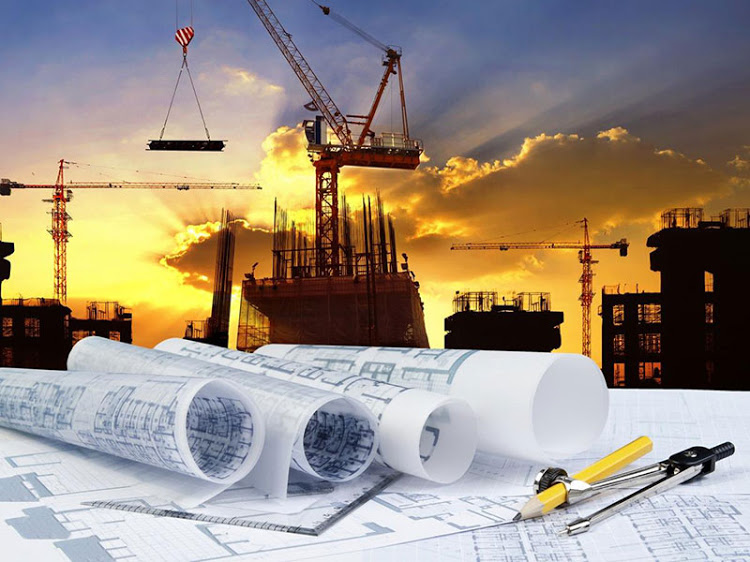

La ingeniería mecánica es una de las ramas más antiguas e importantes de la ingeniería, ella estudia y perfecciona específicamente los principios de la termodinámica, trasferencia de calor, mecánica, mecánica clásica, mecánica cuántica, mecánica de fluidos, análisis estructural, estática, dinámica, ecuación diferencial, Ondas, Campos, trigonometría, cálculo vectorial, Teoría de control y ciencia de materiales para el diseño y análisis de diversos elementos usados en la actualidad, tales como maquinaria con diversos fines (térmicos, hidráulicos, transporte, manufactura, robótica), así como también de sistemas de ventilación, refrigeración, vehículos motorizados terrestres, aéreos, marítimos y espaciales, entre otras aplicaciones. Los principales ámbitos generales desarrollados por ingenieros mecánicos incluyen el desarrollo de proyectos en los campos de la ingeniería que tengan por objeto la construcción, reforma, reparación, conservación, demolición, fabricación, instalación, montaje o explotación de: estructuras, equipos mecánicos, instalaciones energéticas, instalaciones y plantas industriales. La ingeniería mecánica es un campo muy amplio que implica el uso de los principios de la física para el análisis, diseño, fabricación de sistemas electromecánicos. Tradicionalmente, ha sido la rama de la ingeniería que mediante la aplicación de los principios físicos, ha permitido la creación de dispositivos útiles, como utensilios y máquinas. La ingeniería mecánica es la rama que estudia y desarrolla las máquinas, equipos e instalaciones, considerando siempre los aspectos ecológicos y económicos para el beneficio de la sociedad. Para cumplir con su labor, la ingeniería mecánica analiza las necesidades, formula y soluciona problemas técnicos mediante un trabajo multidisciplinario y se apoya en los desarrollos científicos, traduciéndolos en elementos, máquinas, equipos e instalaciones que presten un servicio adecuado, mediante el uso racional y eficiente de los recursos disponibles.
 La ingeniería civil es la disciplina de la ingeniería que emplea conocimientos de cálculo, mecánica, hidráulica y física para encargarse del diseño, construcción y mantenimiento de las infraestructuras emplazadas en el entorno, incluyendo carreteras, ferrocarriles, puentes, canales, presas, puertos, aeropuertos, diques y otras construcciones relacionadas. La ingeniería civil es la más antigua después de la ingeniería militar, de ahí su nombre para distinguir las actividades no militares con las militares. Tradicionalmente ha sido dividida en varias subdisciplinas incluyendo ingeniería ambiental, ingeniería sanitaria, ingeniería geotécnica, geofísica, geodesia, ingeniería estructural, ingeniería del transporte, ciencias de la Tierra, urbanismo, ordenación del territorio, ingeniería hidráulica, ciencia de materiales, gestión costera, e ingeniería de la construcción. El ingeniero civil ocupa puestos en prácticamente todos los niveles: en el sector público desde el ámbito municipal al gubernamental y en el ámbito privado desde los pequeños consultores autónomos que trabajan en casa hasta los contratados en grandes compañías internacionales. La ingeniería ha sido un aspecto de la vida desde el inicio de la existencia humana. Las prácticas más tempranas de la ingeniería civil podrían haber comenzado entre el 4000 y el 2000 a. C. en el Antiguo Egipto y Mesopotamia cuando los humanos comenzaron a abandonar la existencia nómada, creando la necesidad de un cobijo. Durante este tiempo, el transporte empezó a incrementar su importancia, lo que llevó al desarrollo de la rueda y de la navegación. Hasta la Edad Contemporánea no hay una distinción clara entre ingeniería civil y arquitectura, y el término ingeniero y arquitecto sufrió variaciones refiriéndose a la misma persona, incluso intercambiándose. La construcción de las Pirámides de Egipto entre el 2700 y el 2500 a. C.